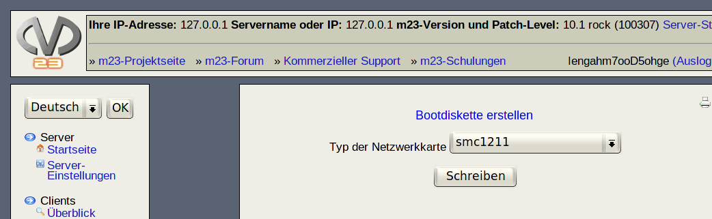

Hier können Sie eine Bootdiskette zum Booten von m23-Clients anlegen. Diese Diskette wird benötigt, um Clients einzurichten und ist im normalen Betrieb nicht mehr nötig. Anstelle der Bootdiskette können Sie auch das Bootrom Ihrer Netzwerkkarte benutzen.

Gehen Sie wie folgt vor:
- Legen Sie eine Diskette in das erste Diskettenlaufwerk (Laufwerk a:) des Servers ein.
- Wählen Sie den Netzwerkkartentyp aus der Liste aus.
- Klicken Sie auf SSchreiben".
dodger
2014-01-22